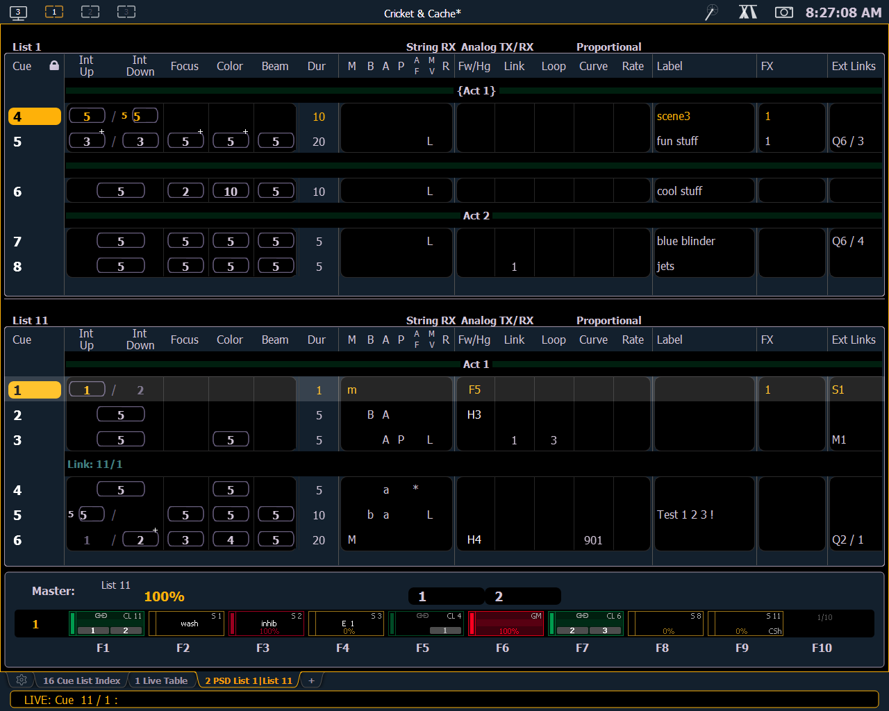

Pressing [Format] with the playback status display active will access this format. With the playback status display split, two different cue lists can be displayed at the same time. This is set in the configuration menu (see Playback Status Display Configuration for more information).
Note: The first time you access the split playback status display, you may need to adjust the splitter bar between the two lists to see the second list.
